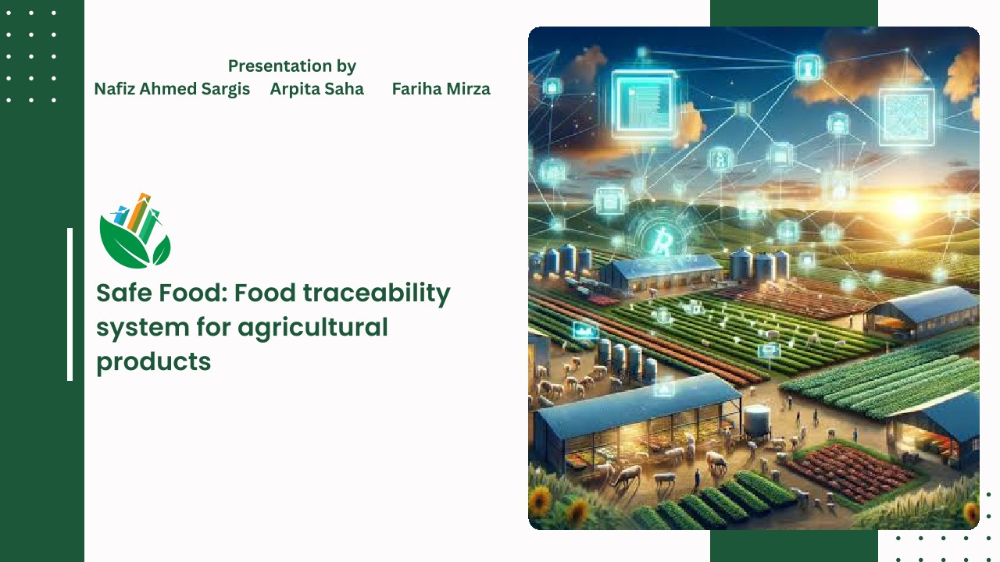
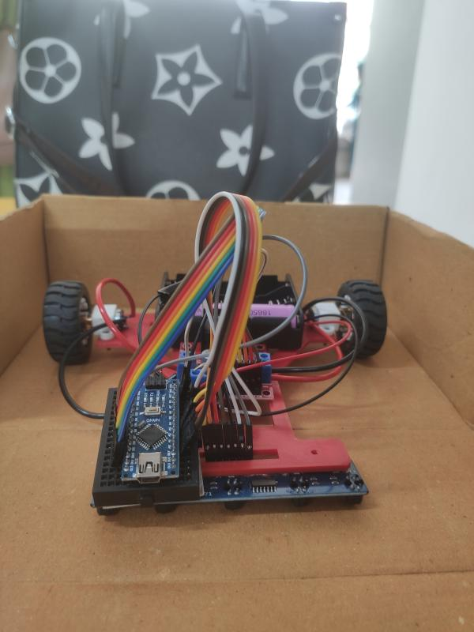
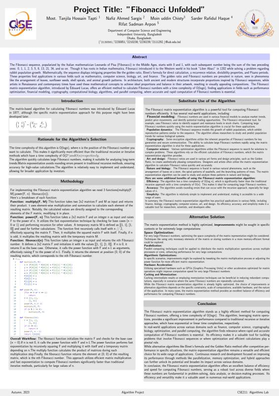
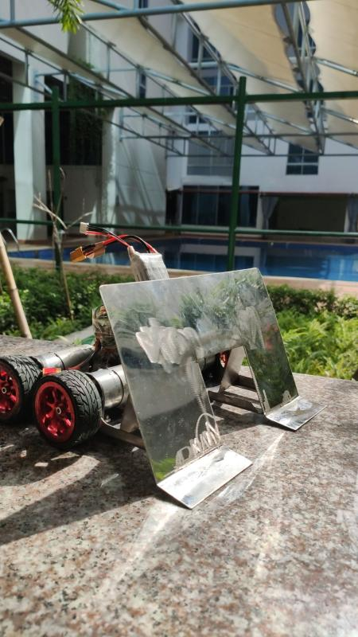

Here are some of the things I've built — ranging from coursework to personal projects

A web-based system designed to track food products across the supply chain, ensuring transparency and safety. It includes database design, user interaction, and backend integration for managing food traceability data.
My Role: Team Member View Project💡 Learned: How to design relational databases using ERD and normalization, integrate PHP with MySQL, and build dynamic web applications with user roles and data flow handling.

An Arduino-based robot that follows a path using infrared sensors and avoids obstacles using an ultrasonic sensor, with motor control logic for navigation.
My Role: Team Member View Project💡 Learned: How to implement real-time control systems, use sensor feedback for decision-making, and apply PID concepts to improve movement accuracy.
A simulation of a printing press system built using Object-Oriented Programming concepts, modeling job processing, resource management, and workflow operations.
My Role: Team Member View Project💡 Learned: How to apply OOP principles like encapsulation and inheritance to model real-world systems and manage complex workflows in software.

A project exploring the mathematical significance of the Fibonacci sequence, including its patterns, properties, and applications in nature, art, and technology.
My Role: Team Member💡 Learned: How mathematical concepts can be visualized and communicated effectively, and how patterns like Fibonacci appear in real-world scenarios.

A robotic system designed to play soccer by navigating a field, detecting the ball, and attempting to score goals either autonomously or via remote control.
My Role: Team Member View Project💡 Learned: How to design and control robots, integrate hardware components, and solve real-world engineering challenges in navigation and control.